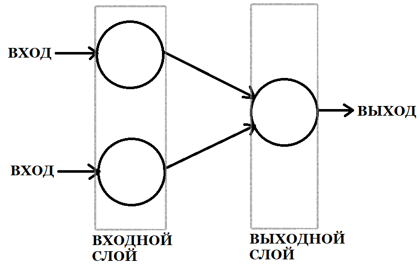
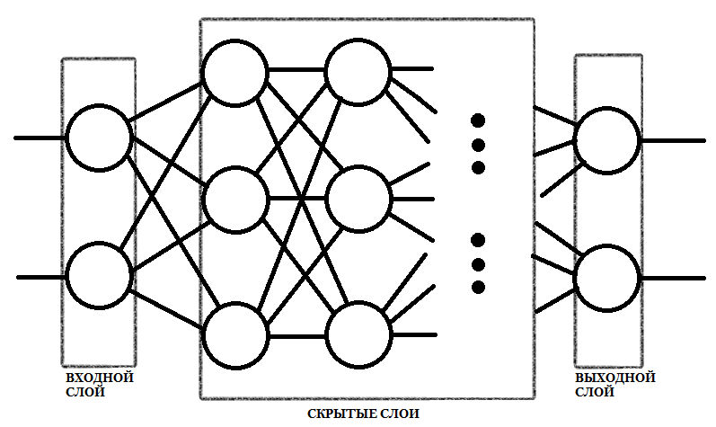
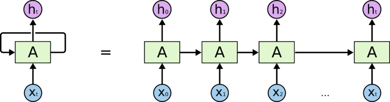
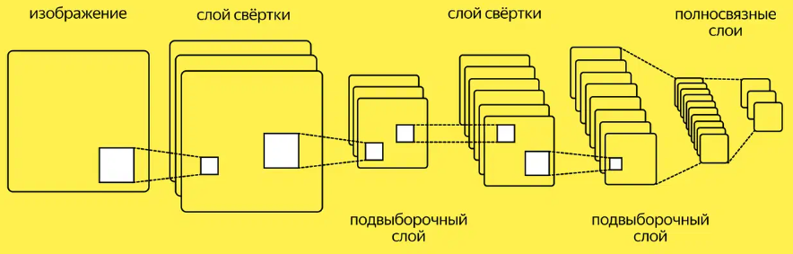

Краткое описания основных типов нейронных сетей,
рекомендации по выбору архитектуры нейронной сети,
описание библиотек для создания нейронных сетей на Python
Алгоритм работы нейронной сети:
Нейронные сети не программируются изначально, а обучаются.
Обучение нейронных сетей — это процесс, в котором нейронная сеть адаптируется к определенной задаче путем обновления весов между нейронами.
Обычно обучение нейронных сетей происходит в несколько этапов:
Можно выделить несколько способов обучения нейронных сетей:
Функция активации в нейронных сетях определяет, как нейрон должен реагировать на входные сигналы, которые поступают на него из других нейронов или из внешней среды. Функция активации обычно применяется к взвешенной сумме входных значений, которая затем преобразуется в выходной сигнал, который передается следующим нейронам в сети.
Функция активации может быть линейной или нелинейной.
Линейная функция активации просто умножает входной сигнал на коэффициент и добавляет смещение (используется для задач регрессии),
а нелинейная функция активации применяет нелинейное преобразование к входному сигналу. Нелинейная функция активации часто используется для того, чтобы нейронная сеть могла выявлять сложные нелинейные зависимости между входными и выходными данными.
Некоторые из наиболее распространенных функций активации:
Функция потерь используется для оценки того, насколько хорошо модель выполняет задачу. Она представляет собой математическую функцию, которая измеряет разницу между истинными значениями и предсказанными значениями модели.
Значение функции потерь используется в процессе обучения модели, чтобы корректировать веса связей между нейронами таким образом, чтобы потери были минимальными. Цель обучения нейронных сетей заключается в том, чтобы минимизировать функцию потерь.
Различные задачи требуют различных функций потерь, например, для задач регресии используется MSE (Mean Square Error), а для задач классификации — кросс-энтропийная функция.
Существует множество типов нейронных сетей, которые можно классифицировать в зависимости от структуры, потока данных, слоев и др.
Однослойная нейронная сеть — сеть, в которой сигналы от входного слоя сразу подаются на выходной слой, который и преобразует сигнал и сразу же выдает ответ.

Однослойные нейронные сети используются для решения простых задач, таких как:
Многослойная нейронная сеть — нейронная сеть, состоящая из входного, выходного и расположенного(ых) между ними одного (нескольких) скрытых слоев нейронов. Каждый нейрон получает входные данные и преобразует их в выходные значения, которые становятся входными данными для следующего слоя.

Применение многослойных нейронных сетей включает такие задачи, как:
Полносвязные нейронные сети являются наиболее простой и широко распространенной формой искусственных нейронных сетей. В данной архитектуре каждый нейрон каждого слоя связан со всеми нейронами предыдущего и следующего слоя, а сигнал распространяется от входного слоя к выходному, не образуя обратных связей.
Примером применения полносвязных сетей является решение следующих задач:
Рекуррентные нейронные сети — это класс нейронных сетей, которые могут моделировать последовательности данных, где каждый элемент зависит от предыдущих. Каждый входной элемент подается на вход вместе с предыдущим скрытым состоянием, которое играет роль «памяти». Это позволяет сети сохранять информацию о предыдущих элементах последовательности и использовать ее для обработки текущего элемента.

Некоторые области применения рекуррентных нейронных сетей:
Сверточные нейронные сети – это специальный тип нейронных сетей, которые используются преимущественно для анализа изображений.
Архитектура сверточных нейронных сетей содержит несколько различных слоев:

Сверточные нейронные сети широко используются для решения задач компьютерного зрения, таких как классификация изображений, распознавание объектов, детектирование лиц и обработка изображений.
Python является одним из наиболее популярных языков программирования для создания нейронных сетей. Это связано с тем, что Python имеет множество библиотек и инструментов для машинного обучения и глубокого обучения, которые делают процесс создания нейронных сетей более простым и эффективным.
TensorFlow хорошо известная в сообществе глубокого обучения библиотека, предоставляющая множество базовых и сложных операций. Она была разработана командой Google для работы с данными, которые имеют тензорную структуру, т. е. большинство вычислений основывается на векторно-матричных умножениях.
TensorFlow используется в таких областях, как распознавание речи, компьютерное зрение, обработка естественного языка, анализ данных и других.
TensorFlow позволяет:
Keras — это высокоуровневая библиотека глубокого обучения для Python, которая позволяет использовать и создавать модели нейронных сетей с минимальными усилиями.
Одна из главных особенностей Keras — это то, что она практически не требует знания математики и программирования глубокого обучения для создания сложных нейронных сетей. Ее модели могут быть созданы с помощью нескольких простых строк кода, что сделало ее одной из самых популярных библиотек машинного обучения.
Несмотря на то, что Keras может быть применена во многих областях, где применяются машинное обучение, она наиболее полезна в обработке изображений, звука и текста.
PyTorch — это фреймворк с открытым исходным кодом, предназначенный для создания нейронных сетей высокой производительности и обеспечивает простоту и гибкость в работе.
PyTorch подходит для моделей глубокого обучения, включая модели последовательностей, обучения с подкреплением и реляционных моделей.
PyTorch имеет богатый инструментарий для работы с нейронными сетями, включая модули для обработки изображений, работу со словесными данными и временными рядами. Библиотека TorchVision позволяет загружать и обрабатывать изображения с помощью нейронных сетей, включая детектирование объектов и классификацию.